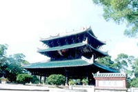
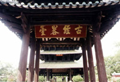
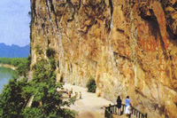
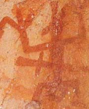
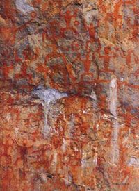
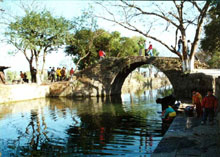
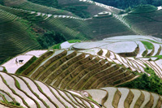
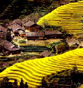

真武阁屹立于容县城东绣江之滨，相传建于唐代乾元---大历年间（758年---779年），因诗人元结任容管经略史时所建而得名，台上原有建筑早废，明代万历元年，为奉祀真武大帝以镇火灾，建成三层楼阁。按明代的《嘉靖武当宫碑》说，初曰“经略台，寻废，建武当宫于其上，至今且数百年期间兴废成毁竟无考信”。
现在我们所见到的三层纯木结构真武阁，是创建于明万历元年（公元1573年）的原物，至今已有400多年的历史了。真武阁轻盈秀美，玲珑剔透，“隆栋蜚梁，斗窗云槛”，“摘星辰于尺五”，“纵目以四方”，“为一邑之具瞻”。
真武阁是现存的江南四大名楼中年岁最高的“老大”。真武阁的建筑技术登峰造级，巧妙奇绝。全阁高13.2米，面宽13.8米，进深11.2米，是用杠杆原理串联逗接而成的。全阁用近三千条大小不一的南方特有的格木构件，以巧妙的杠杆结构方法，串联吻合，相互制约,组成一个优美、稳固的统一整体，全阁不用一颗铁钉。二层楼上，出现了四根头顶千斤,脚不着地的承重内金柱,承受着上层楼板、配柱和庞大的屋顶的沉重负荷，这是“杠杆原理”所造成的悬柱奇观，将从地层通到二层的八根通柱,变成二层以上整个结构的支点，在通柱上分上下两层横贯七十二根挑枋,这些挑枋象天平上的横杆一样，外面长的一端挑起宽阔的瓦檐,里面短的一端跳起二层的内柱，使它头顶千斤,脚不落地。这种杠杆原理在我国的古建筑中应用较多，而真武阁则用得特别巧妙奇绝。
400多年来，真武阁象一架精确的的天平，经历了多次风暴和地震的考验，被人们赞誉为“天南奇观”，“古建明珠”，“天下一绝”,“容州滕王阁，绣江黄鹤楼”,更有传说是鲁班建造的“神仙楼”。真武阁当之无愧地与黄鹤楼、岳阳楼、滕王阁并称江南四大名楼。

壁画也称岩画，就是刻画在山洞壁上和山崖上的图画，最早是在欧洲发现的，它的创作时间大都是在旧石器时代后期到铁器时代早期，内容多是狩猎、野兽、家禽等，它们是人类祖先生活情景和思想智慧的反映，是研究一个民族发生发展的重要依据，有着非常珍贵的价值。花山壁画的发现，填补了我国无岩画的空白。
花山位于广西明江左岸，距宁明县城 5O里。花山崖壁画是左江崖壁画的代表作，高距地面250米，山势陡峭，壁画就在临江的崖壁上，向西南方。画面高44米，宽170米，是我国现存最大的一幅崖壁画。画面从距山脚2米开始绘制，而以5-20米高的中间部分的画像最多。崖画大部分描绘着不同的人物形态，至今仍能清晰可辨的约有 1300多个，最大的高达2米，最小的不到O.3米，多数人物在0.6至1.5米之间。人物旁边、顶部或脚下多配有物件或动物，共同构成花山的全部壁画。所绘人物均为裸体，形象淳朴，形态各异。正中有一个腰挂刀剑、头上有兽形装饰，配有坐骑的数米高巨人，威风凛凛地站在那里观看弄鼓击乐狂歌纵舞的人群，估计为领袖或指挥官。其余人物多取正面，双臂平伸上举，腿曲作骑马蹲档式，好似舞蹈动作的-瞬间；也有少数侧面人物，多数难辨性别。纵观全面，画面表现的是某种祭祀活动的场面，但具体内容所指，目前有不同的看法。花山崖画系用软刷类工具调红颜色画成，用笔粗犷有力，古朴稚拙，群像生动，构图饱满，求密讲势。画壁于河弯处的峡谷陡崖之上，在阳光照耀和水光反映下，放出红色异彩，大气神秘。崖画无文字说明，关于制作时间，说法不一。有的认为是我国战国前期，有的认为是汉代遗物，有的认为是唐宋西原蛮人遗物。虽然断代有不同看法，但多数学者认为花山崖画距今已有1000-2000年的历史，是壮族先民骆越人留下的艺术作品。
像花山崖画这样的崖壁画，在左江流域的龙州、崇左、扶绥、大新等县，已经发现有84个地点，183处，287个画组，绵延200多公里，它们共同组成为左江崖壁画群。这颗广西壮族古代艺术的璀璨明珠，不仅是我国现存最大的崖壁画群，在全世界也是极为罕见的。

灵渠位于广西兴安县城内，开凿于秦始皇三十三年（公元前219年），与郑国渠，都江堰一起，成为我国古代三大水利工程。但它与后二者有不同的功用：郑国渠，都江堰的目的是为了灌溉，而灵渠却为了"以通粮道"，用于运输.灵渠的开凿连接湘漓二水，沟通了长江水系和珠江水系，使南江北国连成一体，促进了汉民族与岭南各少数民族的经济，政治，文化的交流，在祖国的统一和发展过程中，起了无法估量的巨大作用。
灵渠包括南，北二渠，其主体工程有铧嘴，天平，泄水天平和阻水陡门等等。工程艰巨而设计科学精当，在当时没有任何测量仪器和没有火药的情况下，能做到使北渠，南渠七，三分水，使湘，漓二水连接通航，真是一项了不起的壮举！其运输功用从秦到清末，民初，历时两千多年，直到湘桂铁路，桂黄公路通车才渐渐消失。这在我国运输史上，以至世界航运史上都是罕见的。1987年，十六个国家的水利专家们聚集灵渠开会，进行学术讨论，宣读了几十篇论文，对灵渠大加赞赏，无不从它的开凿中受到启发。灵渠对世界科学的发展，不管是过去还是今天，都起了不可估量的作用。
两千多年来，灵渠一直是中原与岭南交往的咽喉要道，许多名人学者在这里留下了足迹；民间也流传着许多生动有趣的故事。这里气候温和，风光明丽，山清水秀，洞巧石奇，更成为人们游览的胜地，成为甲天下的桂林山水中的一个重要组成部分。有桂林必须游阳朔和兴安，否则，便无法领略天公之奇，人工之巧的奇伟全貌。

龙脊梯田景区距桂林市103Km，距县城22.5Km，占地面积66Km2。集梯田风光与民俗风情为一体，主要景观有：龙脊梯田、大寨梯田、小寨梯田、龙脊古壮寨、金竹壮寨、黄洛瑶寨等。其中龙脊梯田是广西的一级景区之一。
龙脊梯田海拔在380m至880m之间，垂直高差500m。梯田开造于元代，从山脚一直盘绕到山顶，大者不过一亩，小者仅播上三行禾苗，形成小山如螺、大山似塔、如链如带的梯田大观园。梯田四季景色各具特色，春如层层银带，夏滚道道绿波，秋叠座座金塔，冬似群龙戏水，其壮观被艺术家们赞叹为“神的韵律，优美的线条”。
龙脊梯田，汇世界田园造型之精华，集农民耕智慧之大成，堪称世界“梯田之冠”。